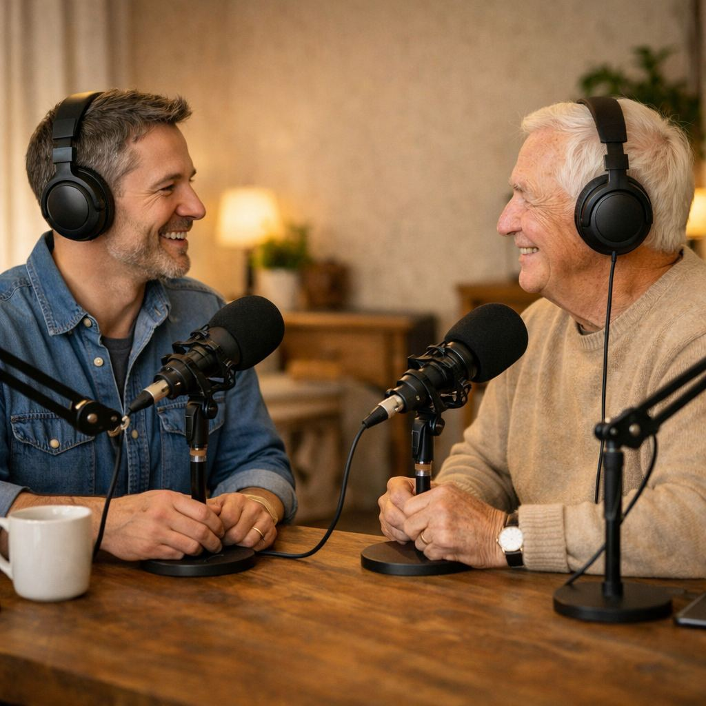

Real people. Real connection. Preserved.
Legacy Sessions exists to capture what photos can't — how someone speaks, laughs, reacts, and connects with the people they love.
Request a CallWhy We Do This
Over time, memories fade in very specific ways.
You remember what someone looked like, but not quite how they sounded or interacted.
A Legacy Session helps families keep the parts that matter most — the personality, humor, and presence of someone they care about.
Authentic over performative
Comfortable over polished
Meaningful over impressive
Who We Are

[Founder Name]
We created Legacy Sessions to preserve ordinary conversations that later become priceless.
[Founder Name]
Our role is simply to make people comfortable and let the conversation unfold naturally.
[Founder Name]
Every session reminds us why this work matters — capturing moments before they're gone.
What a Session Feels Like
It doesn't feel like being filmed.
It feels like sitting down and having a meaningful conversation — with gentle prompts if needed.
You can pause anytime.
Emotional moments are welcome.
Nothing has to be perfect.
Gallery
(Examples shown with permission. Most sessions remain private.)
Stories you've heard a hundred times
Advice from a parent to their children
Remembering childhood together
Conversations worth keeping
The way they laugh
Moments you'll return to
FAQ
How long is a session?
Up to 2 hours.
Where does it happen?
In-home anywhere in San Diego County.
Do we need to prepare?
No — we guide the conversation naturally.
What do we receive?
A lightly edited legacy film and 10–20 short shareable clips.
How much does it cost?
$1,500 per session.
Is it awkward?
Usually only for a minute or two. It quickly becomes a normal conversation.